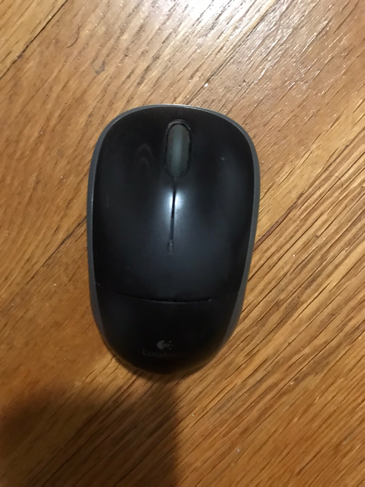
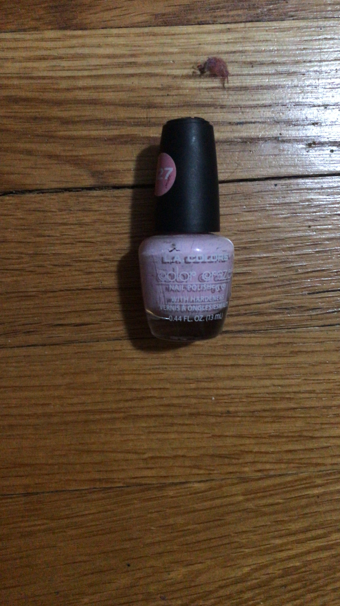
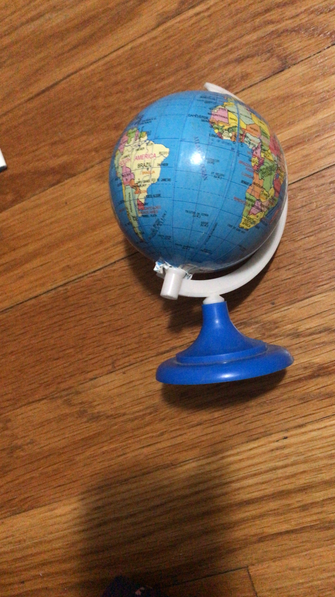

Case Study:
Google Lens vs. Mobile Net
1: Test image

Output on Google Lens - Logitech Wireless Mouse
Output on Mobile Net - Mouse
Result: Google Lens is more accurate!
2: Test image
Output on Google Lens - iPhone 7
Output on Mobile Net - Mobile phone
Result: Google Lens is more accurate!
3: Test image
Output on Google Lens - Plantronics Vayager Focus (Computer headset)
Output on Mobile Net - Backpack
Result: Google Lens is more accurate!
4: Test image
Output on Google Lens - iTouch PlayZoom Kids Smartwatch
Output on Mobile Net - Microphone
Result: Google Lens is more accurate!
5: Test image
Output on Google Lens - Vintage Desk Clock
Output on Mobile Net - Wall Clock
Result: Google Lens is more accurate!
6: Test image

Output on Google Lens - OPI Nail Lacquer
Output on Mobile Net - Holster
Result: Google Lens is more accurate!
7: Test image
Output on Google Lens - Conair Detangling Brush
Output on Mobile Net - Microphone
Result:Google Lens is more accurate!
8: Test image

Output on Google Lens - Globe
Output on Mobile Net - Maraca
Result: Google Lens is more accurate!
9: Test image
Output on Google Lens - Friendship List #1: 11 Before 12 (Book by Lisa Greenwald)
Output on Mobile Net - Pencil box
Result: Google Lens is more accurate!
10: Test image
Output on Google Lens - Ruler
Output on Mobile Net - Ruler
Result: Both Google Lens and Mobile Net are accurate!